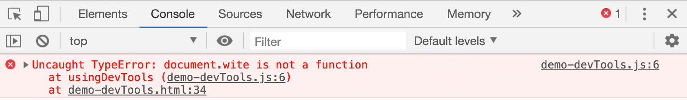

Sometimes when we are programming intently we just don’t see obvious errors like the missing “r” in write. We need help!
document.wite("Is this thing on?");
The Developer Tools can help us identify errors in our code.

Take a look a the code in demo-devTools.js to find and fix the error. The Sample Output will appear once the error is corrected.